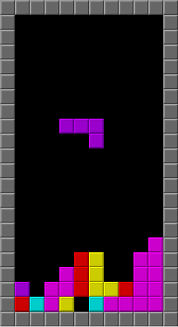

Bij het werken aan deze module ben je niet alleen bezig met het ontwerpen van je eigen game. Veel elementen willen we laten zien aan de hand van bestaande games. Om de vier pijlers te onderzoeken, gebruiken we steeds één voorbeeld: Tetris. Dit is een van de bekendste en eenvoudigste games ooit gemaakt.
Wat is Tetris? In Tetris vallen verschillende vormen (zogenaamde 'blokjes' of 'Tetrimino's') van boven naar beneden. De speler kan ze draaien en naar links of rechts verplaatsen om ze zo goed mogelijk neer te leggen. Als je een volledige rij vormt, verdwijnt die rij en krijg je punten. Het spel wordt steeds sneller en eindigt als de blokken tot bovenaan het scherm komen.
Afbeelding: Screenshot van Tetris (bron: Wikipedia)
In de volgende pagina's duiken we in elke pijler, met uitleg, voorbeelden uit Tetris, en opdrachten waarmee je zelf aan de slag kunt. Je zult regelmatig opdrachten krijgen om een game te bekijken met de blik van een ontwerper: "hoe zit het in elkaar?" Kies voor die opdrachten een game uit die je goed kent en die je graag speelt. We raden aan om bij die opdrachten steeds dezelfde, favoriete game te gebruiken: game X. Die opdrachten zien er dan meestal zo uit: "Analyseer voor game X ..."
Opdracht 1.1: Je favoriete game
Kies een game die je zelf speelt en die tot je favoriete games behoort: game X. Het mag een computerspel zijn, maar een bordspel of een ander spel zonder computer mag ook. De game hoeft niet per se een grote game te zijn, wat kleiner kan ook (al is boter-kaas-en-eieren wel erg klein).